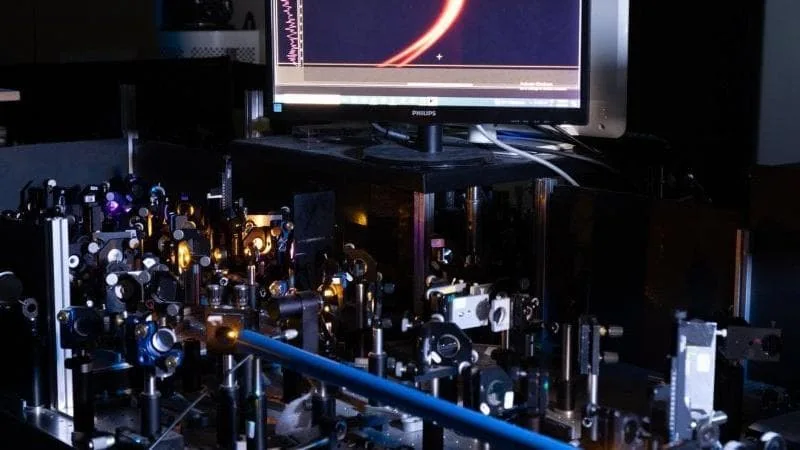
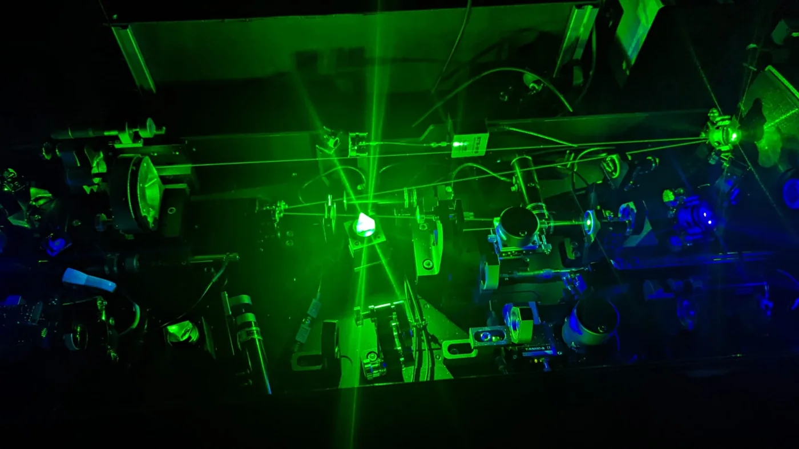

University of Cambridge
Research Associate, Nanophotonics Centre
Ultrafast spectroscopy and plasmonic nanocavities. Led the redesign and rebuild of the visible ultrafast spectroscopy setup during the Cavendish relocation.
About
I study how atomically thin semiconductors interact with light, from excitons and polaritons to ultrafast optical switching.
PhD in Physics from Sheffield, followed by research positions at Sheffield, Politecnico di Milano and Cambridge.
My work combines 2D-material fabrication, optical spectroscopy and cavity photonics.
In the lab


Path
Research Associate, Nanophotonics Centre
Ultrafast spectroscopy and plasmonic nanocavities. Led the redesign and rebuild of the visible ultrafast spectroscopy setup during the Cavendish relocation.
Research Associate, Ultrafast Spectroscopy Group
Ultrafast spectroscopy of strongly coupled 2D semiconductors, polaritonic switching and electrically tunable hybrid excitons.
Research Associate, 2D Sheffield
Optical spectroscopy of twisted TMD heterostructures and magnetic 2D materials.
PhD Physics
Interlayer excitons and polaritons in van der Waals heterostructures.
Research network
Researchers I have worked with directly across 2D materials, polaritonics, ultrafast spectroscopy and nanophotonics.
Full details
Download academic CVGoogle ScholarContact